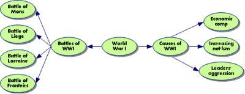

How to Take Better Notes
This article may help you as you are doing the COVID home school coach, assistant teacher, or teacher. I created this document for my kids to help them at school. But I have been to many meetings in the many several years, and I am shocked at how many people, especially the younger group, cannot take notes. I hope people will find this useful. Please make suggestions for improvements to the article.
The Note Page
Note Taking Area: Record lecture as fully and as meaningful as possible.
Cue Column: As you're taking notes, keep the cue column empty. Soon after the lecture, reduce your notes to concise jottings as clues for Reciting, Reviewing, and Reflecting.
Summaries: Sum up each page of your notes in a sentence or two.
Note Taking Area: Record lecture as fully and as meaningful as possible.Cue Column: As you're taking notes, keep the cue column empty. Soon after the lecture, reduce your notes to concise jottings as clues for Reciting, Reviewing, and Reflecting.
Summaries: Sum up each page of your notes in a sentence or two.
This format provides the perfect opportunity for following through with the 5 R's of note-taking:
Record
During the lecture, record in the main column as many meaningful facts and ideas as you can. Write legibly.
Reduce
As soon as possible, summarize these facts and ideas concisely in the Cue Column. Summarizing clarifies meanings and relationships, reinforces continuity, and strengthens memory.
Recite
Cover the Note Taking Area, using only your jottings in the Cue Column, say over the facts and ideas of the lecture as fully as you can, not mechanically, but in your own words. Then, verify what you have said.
Reflect
Draw out opinions from your notes and use them as a starting point for your own reflections on the course and how it relates to your other courses. Reflection will help prevent ideas from being inert and soon forgotten.
Review
Spend 10 minutes every week in a quick review of your notes, and you will retain most of what you have learned.
Note Taking Skills Evaluate Your Present Note-Taking System
Ask yourself?
- Did I use any form at all? Are my notes clear or confusing?
- Did I capture the main points and subpoints?
- Did I streamline using abbreviations and shortcuts
If you answered no to any of these questions, you may need to develop some new note-taking skills!
Five Important Reasons to Take Notes
- It triggers basic lecturing processes and helps you to remember information.
- It helps you to concentrate in class.
- It helps you prepare for tests.
- Your notes are often a source of valuable clues for what information the instructor thinks most important (i.e., what will show up on the next test).
- Your notes often contain information that cannot be found elsewhere (i.e., in your textbook).
Guidelines for Note-Taking
- Concentrate on the lecture or on the reading material.
- Take notes consistently.
- Take notes selectively. Do NOT try to write down every word. Remember that the average lecturer speaks approximately 125-140 words per minute, and the average note-taker writes at a rate of about 25 words per minute.
- Translate ideas into your own words.
- Organize notes into some sort of logical form.
- Be brief. Write down only the major points and important information.
- Write legibly. Notes are useless if you cannot read them later!
- Don't be concerned with spelling and grammar.
Tips for Finding Major Points in Lectures
The speaker is usually
making an important point if he or she:
- Pauses before or after an idea.
- Uses repetition to emphasize a point.
- Uses introductory phrases to precede an important idea.
- Writes an idea on the board.
Forms of Note-Taking
- Outlining
I. Topic sentence or main idea
A. Major points providing information about the topic
1. Subpoint that describes the major point
a. Supporting detail for the subpoint - Patterning: flowcharts, diagrams
- Listing, margin notes, highlighting
Ways to Reduce and Streamline Notes
- Eliminate small connecting words such as: is, are, was, were, a, an, the, would, this, of course. Eliminate pronouns such as they, these, his, that, them. However, be careful NOT to eliminate these three words: and, in, on.
- Use symbols to abbreviate, such as:
+, & for and, plus
= for equals
- for minus
# for number
x for times
> for greater than, more, larger
< for less than, smaller, fewer than
w/ for with
w/o for without
w/in for within
----> for leads to, produces, results in
<---- for comes from
/ for per
For example:
"The diameter of the Earth is four times greater than the diameter of the Moon."
Becomes:
"Earth = 4x > diameter of the Moon." - Substitute numerals with symbols, for instance:
Substitute "one" with 1
Substitute "third" with 3rd - Abbreviate:
Drop the last several letters of a word. For example, substitute "appropriate" with "approp."
Drop some of the internal vowels of a word. For example, substitute "large" with "lrg."
Listening Skills
Can a lecturer's valuebe extracted only through listening. But listening is not the same as hearing. Listening is a conscious activity based on three basic skills: attitude, attention, and adjustment. These skills are known collectively as triple-A listening.
- Maintain a constructive attitude
A positive attitude paves the way for open-mindedness. Don't assume from the outset that a lecture is going to be dull. And even if the lecturer makes statements you disagree with, don't decide they are automatically wrong. Don't let reactive interference prevent you from recalling the speaker's key points. - Strive to pay attention
You cannot attain concentration by concentrating on the act of concentration. Your attention must focus on the lecture. When you hear a lecture, the words enter your short-term memory, where they have to be swiftly processed into ideas. If they aren't processed, they will be dumped from short-term memory and gone forever. Attentive listening makes sure the ideas are processed. - Cultivate a capacity for adjustment
Although some speakers indicate what they intend to cover in their lectures, you need to be flexible enough to follow a lecture regardless of the direction it may take. If, however, you are thoroughly lost, or if the speaker's messages are not coming across and you need to ask a clarifying question, do so.
Concentration
THE PROBLEM
In many colleges, over 30% of the students report problems concentrating on their studies. Most of these students blame outside distractions for their problems. Many research studies manipulating noise levels and distractions have found that such disturbances may increase, decrease, or not even affect concentration. These researchers have therefore concluded that distracters don't cause concentration problems directly. It is the way the distractors are interpreted by the students that disrupt their study.
CREATING A STUDY ENVIRONMENT
- Find a place to study and keep it for study only.
- Tool-up the environment with all study needs.
- Control noise level and the visual environment to acceptable levels.
- Avoid relaxing while working; create a work atmosphere.
WHEN TO STUDY
- Best during the day and early evening; you'll remember better.
- Best when there are fewest competing activities in progress.
- Best when adequate rest periods are provided.
- Stop studying when fatigue or lack of attention occurs.
HOW TO STUDY & CONCENTRATE
- When distractors are present, they become intensely involved.
- Keep a pad of paper handy to jot down extraneous thoughts that cross your mind while studying, get them out of your mind, and on to paper.
- Set study goals before you begin each period of study (number of pages, number of problems, etc.).
- Design adequate rewards after specified goals are attained.
- Break up the content of study by mixing up subjects and building in variety and interest and removing boredom.
- Make the most of rest periods-do something quite different.
- Don't try to mix work and play.
- Start with short study periods and slowly build to longer periods only as fast as you maintain concentration.
- If necessary, make a calendar of events to clear your mind of distractions.
- Plan the length of your study period by the amount of material you have decided to cover, not by the clock. (Often the clock is one of the most serious distracters.)
The SQ3R Method for Thorough Study
Step 1: SURVEY
Skim through the book and read tropical and subtropical headings and sentences. Read the summaries at the end of chapters and books. Try to anticipate what the author is going to say.
WRITE these notes on paper, in sequence; then look over the jottings to get an overall idea or picture.
Step 2: QUESTION
Instead of reading paragraph headings such as "Basic Concepts of Reading," change to read, "What are the Basic Concepts of Reading?" These questions will become "hooks" on which to hang the reading material.
WRITE these questions out; look over the questions to see the emphasis and direction; then attempt to give plausible answers before further reading.
Step 3: READ
Read with smoothness and alertness to answer the questions. Use all the techniques and principles demonstrated in class.
WRITE notes, in your own words, under each question. Take a minimum number of notes - use these as a skeleton.
Step 4: RECALL
Without looking at your book or notes, mentally visualize and sketch, in your own words, the high points of the material immediately upon completing the reading.
Step 5: REVIEW
Look at your questions, answers, notes and book to see how well you did recall. Observe the points carefully stated incorrectly or omitted. Fix carefully in mind the logical sequence of the entire idea, concepts, or problem. Finish up with a mental picture of the WHOLE.
NOTE: More time should be spent on recall than on reading.
Symbols
Using symbols helps students save time when taking notes. They are quick to write and take up less space than the much longer words they represent. Some examples of symbols include a percentage (%), question (?), number (#), and money ($). For practice, have students come up with symbols for the following words: equals, star, sun, and circle. You can then dictate mock sentences including these words and have the student write each sentence using abbreviations. For example, you might dictate the sentence, "Jack has a question about problem number one and would like an answer!" The student might write, "Jack has a ? about problem #1 & would like an answer!"
Abbreviations
Abbreviations, or shortened versions of longer words, help students break down words into smaller chunks of letters. Some examples of abbreviations include Wednesday (Wed), homework (hwk), people (ppl), and school (schl). Students can feel free to make up their own abbreviations - there are no set rules for abbreviating most words! For example, he or she can choose to abbreviate therefore as this, maybe as mbe, or assignment as asmt. Students can be as creative as they like, so long as they remember what the abbreviations stand for. For practice, have students come up with abbreviations for the following words: Thursday, workbook, problem, notebook, and lesson. Then dictate sentences integrating these abbreviations for extra reinforcement. Work with the student to associate the abbreviation with the full word.
Contractions
Contractions save students time by combining two words into one shorter, more compact word. Some examples of contractions include: couldn't (stands for could not), he's (stands for he is), and hasn't (stands for has not). Have students come up with contractions for the following words: you are, is not, it will, and they are. For a bonus practice session, dictate sentences containing symbols, abbreviations, and contractions. Your students will be writing shorthand in no time!
The notes
Once students have mastered shorthand techniques, they must learn how to integrate these symbols, contractions, and abbreviations into well-organized notes. What is the best way to organize a well-written page of notes? That answer depends partially on the specific learning style of each student. Learning disabled students, in particular, may have a preferred learning style: some are more linear learners, while others are more visually-oriented. Linear learners will likely take an affinity towards Column-Style Note Taking, while visual learners will more likely prefer Webbing. Students should try both styles of note-taking to see which one works best.
Column-Style Note Taking
Column-Style Note Taking helps students organize information that they hear into two different columns. Should draw the left column 1/3 from the left side of the page, and the right column should be 2/3 from the right side of the page. The student should label the left column "Main Ideas" and the right column "Notes." He or she should pre-prepare 3-4 pages of notes (depending on what grade the student is in and how complex the lecture is) using this column-style set-up.
In class, when the teacher begins speaking, the only place on the page where the student should take notes is on the right side, under the "Notes" column. During class, nothing should be written under the "Main Ideas" column on the left. When the student comes home from school, he or she should re-read the notes and group different sections of the lecture into specific main ideas. For example, if the entire lecture was on World War I, the first part may have been about causes of World War I. Thus, the student would write "Causes of World War I" on the left side of the page, under the "Main Ideas" column, next to the information corresponding to that section of the notes. A student would move through all of his or her notes in that manner, categorizing the notes into different main ideas. A sample of this style of note-taking might be as follows:
| Main Ideas | Notes |
| Causes of WWI | Leaders' aggression ↑ing nat'lism Economic comp. |
| Battles of WWI | Battle of Liege Battle of Frontiers Battle of Lorraine Battle of Mons |
Once the teacher has finished discussing that section, students draw another line branching out from the original center circle. On that line, they write the next main idea (for example, Battles of World War I). They then draw bubbles branching out of that line with important details describing the main idea, and continue with that pattern until the lecture is complete. Webbing helps students visualize information that they hear or read, and serves as a great tool for test preparation. An example of a web diagram might be as follows:

The process of listening in class and taking well-written notes can be an
anxiety-filled
activity. Students will be required to take more and more complex notes as they
progress
through school. Learning these techniques for shorthand and different styles of
note-taking can ease this process and help students develop confidence in their
classroom abilities.